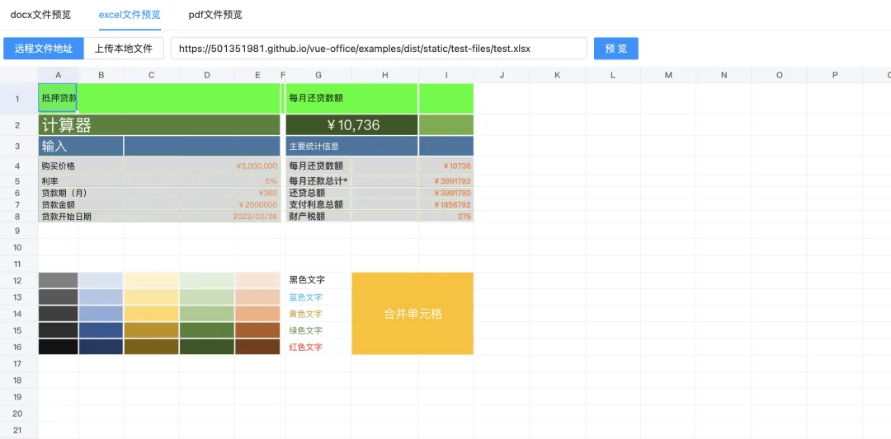

vue-office 是一个支持多种文件(docx、.xlsx、pdf)预览的 vue 组件库，支持vue2和vue3。
我们可以通过如下方式来安装并使用它:
#docx文档预览组件
npm install @vue-office/docx vue-demi
#excel文档预览组件
npm install @vue-office/excel vue-demi
#pdf文档预览组件
npm install @vue-office/pdf vue-demi
<template>
<vue-office-docx
:src="docx"
style="height: 100vh;"
@rendered="renderedHandler"
@error="errorHandler"
/>
</template>
<script>
//引入VueOfficeDocx组件
import VueOfficeDocx from "@vue-office/docx";
//引入相关样式
import "@vue-office/docx/lib/index.css";
export default {
components: {
VueOfficeDocx,
},
data() {
return {
docx: "http://static.shanhuxueyuan.com/test6.docx", //设置文档网络地址，可以是相对地址
};
},
methods: {
renderedHandler() {
console.log("渲染完成");
},
errorHandler() {
console.log("渲染失败");
},
},
};
</script>
接下来给大家演示一下导入 excel 的效果:
同样的它还能导入 pptx 格式的文件:
接下来和大家分享一下它用到的技术栈:
@js-preview/docx，作用：用于处理 docx 文件。@js-preview/excel，作用：用于处理 excel 文件。@js-preview/pdf，作用：用于处理 pdf 文件。@vue-office/docx，作用：用于处理 docx 文件的 Vue 相关实现。@vue-office/excel，作用：用于处理 excel 文件的 Vue 相关实现。@vue-office/pdf，作用：用于处理 pdf 文件的 Vue 相关实现。core-js，作用：JavaScript 标准库的补充。element-plus，作用：基于 Vue 的组件库。vue，作用：Vue.js 框架核心。vue-demi，作用：用于支持 Vue 2 和 Vue 3 的兼容性。vue-router，作用：Vue.js 的路由管理。由上面介绍可以看到, 这个开源项目使用了这三个库:
那么我们其实也可以基于这三个原生库, 来实现自定义的 office 文档预览能力, 虽然我自己亲测下来发现对 excel 的渲染兼容性有待提高, 但是整体上预览能力还是完全够用的.
github 地址: https://github.com/501351981/vue-office